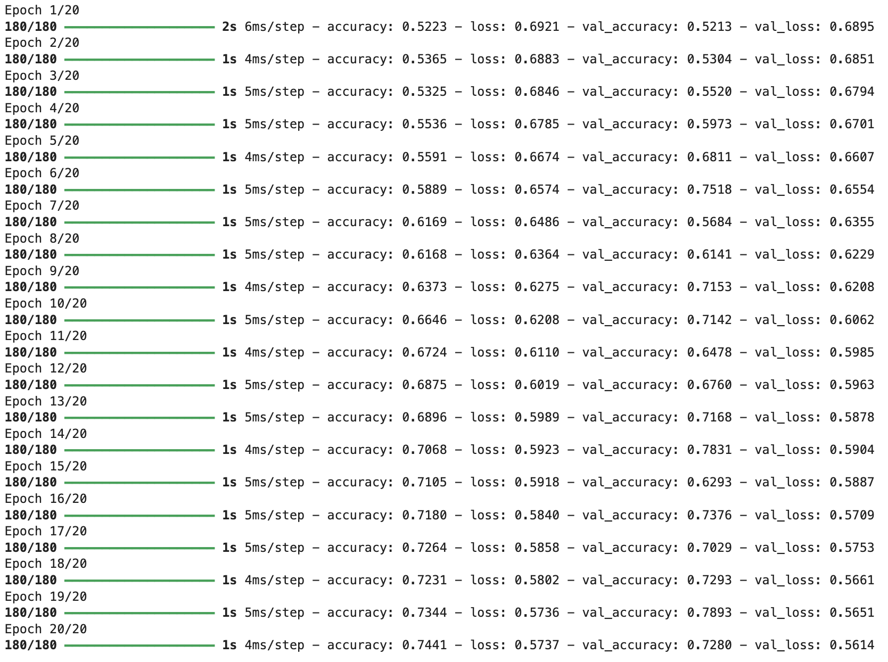

from IPython.display import Image
Image(filename='/Users/athena/Desktop/hw6/titleEpochs.jpg')
Athena Mo
March 5, 2024
In this blog, I will be sharing with you my three models (focusing on different aspects) on fake news classification. The dataset that is used consists of labelled points. Each row of the data includes: title of the article, full article text, and its label (0 if the article is true and 1 if the article contains fake news).
First, we make sure we are using Keras 3:
Looking in indexes: https://pypi.tuna.tsinghua.edu.cn/simple
Requirement already satisfied: keras in /environment/miniconda3/lib/python3.10/site-packages (3.1.1)
Requirement already satisfied: absl-py in /environment/miniconda3/lib/python3.10/site-packages (from keras) (1.4.0)
Requirement already satisfied: numpy in /environment/miniconda3/lib/python3.10/site-packages (from keras) (1.24.1)
Requirement already satisfied: rich in /environment/miniconda3/lib/python3.10/site-packages (from keras) (13.7.1)
Requirement already satisfied: namex in /environment/miniconda3/lib/python3.10/site-packages (from keras) (0.0.7)
Requirement already satisfied: h5py in /environment/miniconda3/lib/python3.10/site-packages (from keras) (3.9.0)
Requirement already satisfied: optree in /environment/miniconda3/lib/python3.10/site-packages (from keras) (0.10.0)
Requirement already satisfied: ml-dtypes in /environment/miniconda3/lib/python3.10/site-packages (from keras) (0.3.2)
Requirement already satisfied: typing-extensions>=4.0.0 in /environment/miniconda3/lib/python3.10/site-packages (from optree->keras) (4.8.0)
Requirement already satisfied: markdown-it-py>=2.2.0 in /environment/miniconda3/lib/python3.10/site-packages (from rich->keras) (3.0.0)
Requirement already satisfied: pygments<3.0.0,>=2.13.0 in /environment/miniconda3/lib/python3.10/site-packages (from rich->keras) (2.15.1)
Requirement already satisfied: mdurl~=0.1 in /environment/miniconda3/lib/python3.10/site-packages (from markdown-it-py>=2.2.0->rich->keras) (0.1.2)keras.__version__ prints ‘3.1.1’
Now for the following code, we first import libraries - Pandas for data manipulation, TensorFlow for machine learning operations, NLTK for natural language processing, scikit-learn for data splitting, and Matplotlib for visualization.
Then, we load dataset from given URL using Pandas’ read_csv, and define two functions preprocessing the data: 1. calculate_vocabulary_size: This function calculates the size of the vocabulary by tokenizing the text data, converting it to lowercase, and removing duplicates. 2. make_dataset: This function preprocesses the dataset by converting text to lowercase, removing stopwords using NLTK, and constructing a TensorFlow Dataset object with input features (title and text) and output labels (fake or not fake).
Next, we calculate the vocabulary Size for both the ‘title’ and ‘text’ columns of the dataset using the calculate_vocabulary_size function. We also split dataset into training and validation sets using scikit-learn’s train_test_split function. Then, the make_dataset function is used to preprocess the datasets, converting them into TensorFlow Dataset objects.
Lastly, we calculate the base rate of the dataset.
import pandas as pd
import tensorflow as tf
import os
import re
import string
from keras import layers
from keras.models import Model
from keras import losses
from nltk.corpus import stopwords
from sklearn.model_selection import train_test_split
from sklearn.preprocessing import LabelEncoder
from matplotlib import pyplot as plt
from keras import utils
# Load the dataset
train_url = "https://github.com/PhilChodrow/PIC16b/blob/master/datasets/fake_news_train.csv?raw=true"
df = pd.read_csv(train_url)
# Download NLTK stopwords
import nltk
nltk.download('stopwords')
stop_words = set(stopwords.words('english'))
# Calculate the size of the vocabulary
def calculate_vocabulary_size(text_column):
all_words = ' '.join(text_column).split()
unique_words = set(all_words)
return len(unique_words)
# Calculate the size of the vocabulary for both title and text columns
size_vocabulary_title = calculate_vocabulary_size(df['title'])
size_vocabulary_text = calculate_vocabulary_size(df['text'])
# Use the maximum vocabulary size from title and text columns
size_vocabulary = max(size_vocabulary_title, size_vocabulary_text)
print("Vocabulary Size:", size_vocabulary)
def make_dataset(df):
# Lowercase the text and title columns
df['text'] = df['text'].str.lower()
df['title'] = df['title'].str.lower()
# Remove stopwords from the text and title columns using NLTK
df['text'] = df['text'].apply(lambda x: ' '.join([word for word in x.split() if word not in stop_words]))
df['title'] = df['title'].apply(lambda x: ' '.join([word for word in x.split() if word not in stop_words]))
# consturct tf.data.Dataset: 2 inputs + 1 output
Dataset = tf.data.Dataset.from_tensor_slices(({
"title" : df[["title"]],
"text" : df[["text"]]
}, {
"fake" : df["fake"]
}))
Dataset = Dataset.batch(100)
return Dataset
# Create datasets
train_df, val_df = train_test_split(df, test_size=0.2, random_state=42)
train = make_dataset(train_df)
val = make_dataset(val_df)
# Calculate the base rate for the dataset
base_rate = max(train_df['fake'].value_counts(normalize=True))
print("Base Rate:", base_rate)Here is the output:
Now we define three separate models for classifying fake news based on the article title, text, or both.
Firstly, we define the standardization to preprocess text data. It converts text to lowercase using TensorFlow’s tf.strings.lower function and removes punctuation using regular expressions and tf.strings.regex_replace.
Then, we create two text vectorization layers using Keras’ TextVectorization class. These layers tokenize and vectorize text data. They use the standardization function for preprocessing, set the maximum number of tokens to the previously calculated size_vocabulary, and specify the output mode as ‘int’ to output integer indices for each token. The vectorization layers are adapted to the training dataset using the adapt method.
Next, the input layers for the title and text data are defined using Keras’ Input class. They specify the shape as (1,) and data type as ‘string’.
For the actual model structure, the title input is passed through the text_vectorize_layer to convert titles into tokenized sequences. The resulting sequences are then passed through an embedding layer, which maps each token to a vector representation. A dropout layer is added to prevent overfitting, followed by a global average pooling layer to aggregate information from the entire sequence. Another dropout layer is included for regularization. Finally, a dense layer with two units and ReLU activation is added to output the classification result.
Finally, we compile model, train, and plot.
def standardization(data):
low = tf.strings.lower(data)
puncfree = tf.strings.regex_replace(low,'[%s]' % re.escape(string.punctuation),'')
return puncfree
title_vectorize_layer = layers.TextVectorization(
standardize=standardization,
max_tokens=size_vocabulary,
output_mode='int',
output_sequence_length=500)
text_vectorize_layer = layers.TextVectorization(
standardize=standardization,
max_tokens=size_vocabulary,
output_mode='int',
output_sequence_length=500)
title_vectorize_layer.adapt(train.map(lambda x, y: x["title"]))
text_vectorize_layer.adapt(train.map(lambda x, y: x["text"]))
title = keras.Input(shape=(1,),name="title",dtype="string")
text = keras.Input(shape=(1,),name="text",dtype="string")
title_features = text_vectorize_layer(title)
title_features = layers.Embedding(size_vocabulary, output_dim = 4, name="embedding")(title_features)
title_features = layers.Dropout(0.2)(title_features)
title_features = layers.GlobalAveragePooling1D()(title_features)
title_features = layers.Dropout(0.2)(title_features)
title_features = layers.Dense(2, activation='relu', name="fake")(title_features)
model1 = keras.Model(
inputs = [title],
outputs = title_features
)
model1.compile(optimizer="adam",
loss = losses.SparseCategoricalCrossentropy(from_logits=True),
metrics=["accuracy"])
history = model1.fit(train,
validation_data=val,
epochs = 20,
verbose = True)
plt.plot(history.history["accuracy"], label = "training")
plt.plot(history.history["val_accuracy"], label = "validation")
plt.gca().set(xlabel = "epoch", ylabel = "accuracy")
plt.legend()
plt.title("Title Model")
plt.show()The text model is defined in identical structure to our title model, just that we are using text as input:
text_features = text_vectorize_layer(text)
text_features = layers.Embedding(size_vocabulary, output_dim = 4, name="embedding")(text_features)
text_features = layers.Dropout(0.2)(text_features)
text_features = layers.GlobalAveragePooling1D()(text_features)
text_features = layers.Dropout(0.2)(text_features)
text_features = layers.Dense(2, activation='relu', name="fake")(text_features)
model2 = keras.Model(
inputs = [text],
outputs = title_features
)
model2.compile(optimizer="adam",
loss = losses.SparseCategoricalCrossentropy(from_logits=True),
metrics=["accuracy"])
history2 = model2.fit(train,
validation_data=val,
epochs = 20,
verbose = True)
plt.plot(history2.history["accuracy"], label = "training")
plt.plot(history2.history["val_accuracy"], label = "validation")
plt.gca().set(xlabel = "epoch", ylabel = "accuracy")
plt.legend()
plt.title("Text Model")
plt.show()Now it gets a bit different for the combined model. We first redefine the text_features and title_features to get the vectorized layers for each. Then, embedding layers are added for both title and text inputs. These layers map the integer indices generated by the vectorization layers to dense vector representations. Each word in the vocabulary is represented by a vector of length 4 (output_dim = 4). Following the embedding layers, dense layers with 32 units and ReLU activation are added for both title and text features. These layers aim to learn non-linear patterns and relationships in the data. The output features from the title and text branches are concatenated along the feature axis (axis 1) using Keras’ concatenate function. This combines the extracted features from both branches into a single feature vector.
Dropout layers with a dropout rate of 0.5 are added after concatenation. Dropout is a regularization technique that randomly sets a fraction of input units to zero during training, which helps prevent overfitting. A global average pooling layer is added to aggregate information across the entire sequence of features. This reduces the dimensionality of the feature representation while retaining important information. Finally, a dense layer with 2 units and ReLU activation is added to output the classification result.
Lastly, we just compile, train, and plot.
title_features = title_vectorize_layer(title)
text_features = text_vectorize_layer(text)
title_embedding = layers.Embedding(size_vocabulary, output_dim = 4)
text_embedding = layers.Embedding(size_vocabulary, output_dim = 4)
title_features = title_embedding(title_features)
text_features = text_embedding(text_features)
title_features = layers.Dense(32, activation='relu')(title_features)
text_features = layers.Dense(32, activation='relu')(text_features)
combined = layers.concatenate([title_features, text_features], axis = 1)
combined = layers.Dropout(0.5)(combined)
combined = layers.GlobalAveragePooling1D()(combined)
combined = layers.Dropout(0.5)(combined)
combined = layers.Dense(2, activation='relu', name = 'fake')(combined)
model3 = keras.Model(
inputs = [title_input, text_input],
outputs = combined
)
model3.compile(optimizer="adam",
loss = losses.SparseCategoricalCrossentropy(from_logits=True),
metrics=["accuracy"])
history3 = model3.fit(train,
validation_data=val,
epochs = 20,
verbose = True)
plt.plot(history3.history["accuracy"], label = "training")
plt.plot(history3.history["val_accuracy"], label = "validation")
plt.gca().set(xlabel = "epoch", ylabel = "accuracy")
plt.legend()
plt.title("Combined Model")
plt.show()I used the following code to evaluate the best performing combined model. Acurracy is 0.9829!
test_url = "https://github.com/PhilChodrow/PIC16b/blob/master/datasets/fake_news_test.csv?raw=true"
test_df = pd.read_csv(test_url)
test = make_dataset(test_df)
model3.evaluate(test)Outputs:
We visualize the embedding our our best performing model - the combined model. First, model3.get_layer(‘embedding’).get_weights()[0] retrieves the weights of the embedding layer named ‘embedding’ from model3. These weights represent the learned embeddings for each word in the vocabulary. Then, title_vectorize_layer.get_vocabulary() retrieves the vocabulary used by the title vectorization layer (title_vectorize_layer). This vocabulary corresponds to the tokens (words) in the title data that were processed during training.
PCA(n_components=2) creates a PCA object specifying to reduce the dimensionality to 2 components. Then, pca.fit_transform(weights) applies PCA transformation on the embedding weights, reducing their dimensionality to two principal components.
A pandas DataFrame named embedding_df is created to organize the reduced embeddings along with their corresponding words. The DataFrame has three columns: ‘word’, ‘x0’, and ‘x1’, where ‘word’ represents the token (word) from the vocabulary, and ‘x0’ and ‘x1’ represent the two principal components obtained from PCA.
The px.scatter function from Plotly Express is used to create a scatter plot of the reduced embeddings. The ‘x0’ and ‘x1’ columns from embedding_df are plotted on the x-axis and y-axis, respectively. Each point in the scatter plot represents a word, and its position is determined by its two principal components.
weights = model3.get_layer('embedding').get_weights()[0]
vocabulary = title_vectorize_layer.get_vocabulary()
from sklearn.decomposition import PCA
pca = PCA(n_components=2)
weights = pca.fit_transform(weights)
embedding_df = pd.DataFrame({
'word' : vocabulary,
'x0' : weights[:,0],
'x1' : weights[:,1]
})
fig = px.scatter(embedding_df,
x = "x0",
y = "x1",
size = [2]*len(embedding_df),
hover_name = "word")
fig.show()# Sorting the embedding DataFrame by the magnitude of weights
embedding_df['weight_magnitude'] = np.sqrt(embedding_df['x0']**2 + embedding_df['x1']**2)
embedding_df_sorted = embedding_df.sort_values(by='weight_magnitude', ascending=False)
# Selecting the top 5 words with the highest weights
top_5_words = embedding_df_sorted.head(5)
# Displaying the top 5 words
print("Top 5 words with highest weights:")
print(top_5_words[['word', 'weight_magnitude']])Outputs: